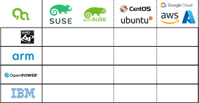

Testing and Delivery of the Base Container Images

who -u
Dan Čermák
| Software Developer @SUSE | |
| i3 SIG, Package maintainer | |
| Developer Tools, Testing and Documentation, Home Automation | |
| https://dancermak.name | |
| dcermak / D4N | |
| @Defolos@mastodon.social |
What is SLE BCI?
- set of open source container images based on SLES
- permissive license, free to use & redistribute (T&C apply)
- available for
x86_64,aarch64,ppc64le&s390x - grab them from
registry.suse.com
flavors:
- base images:
base,micro,minimal,busybox - language stack:
go,openjdk,python, etc. - application:
rmt,postgresql,registry, …
How it all started

Then .Net got out of date…
let's automate things!

And then it grew…
- more images: , , , .Net, micro, minimal, busybox, , ruby, RMT, …
- second service pack: SP3 & SP4
- more formal requirements
let's automate things!

Oh right we should be testing these things…
- BCI testsuite by Jean-Philippe Evrard & Dan Čermák
- pytest, testinfra, and 🧙
- ran just on

Testing evolved
- core split out into
pytest_container

So where are we now?

Let us go public!

Are we there yet?
- it's not really public…
- templates are not getting applied periodically
- template creation requires manual work
- manual changes possible
- .Net separate from rest
🆕 OBS Feature: <scmsync> 🆕
⇒ dockerfile generator should be the single source of truth
Let's move the templates to GitHub
maincontains the codesle15-spX/Tumbleweedcontains rendered templates + changelog


Let's move everything to git


…Are we there yet…?

What is left to do?
- run tests on each pull request
- polish & publish Tumbleweed BCIs
- add support for Tumbleweed to
BCI-tests - ALP based BCI
Thank you 💚
Alexander Herzig, Bruno Leon, Darragh O'Reilly, Dirk Müller, Dmitri Popov, Fabian Vogt, Felix Niederwanger, Frederic Crozat, Ivan Lausuch, Jose Lausuch, Marco Varlese, Marcus Meissner, Martin Loviska, Maurizio Dati, Michal Švec, Olaf Kirch, Pavel Dostál, Ricardo Branco, Vincent Moutoussamy, William Brown, Witold Bedyk
Give me the source!
Questions?
Answers!